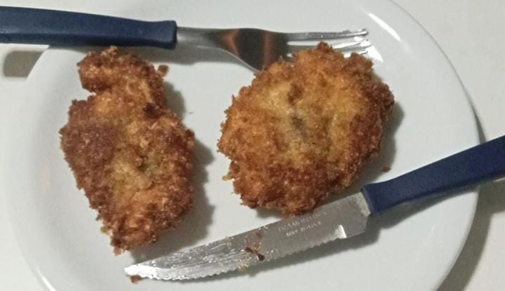

Olá, Sra. Patinha. Faz quatro anos desde a nossa última entrevista. Quais as suas considerações inicias?
Boa noite para todos. É uma grande alegria ainda estar com o senhor patinhos e estar fazendo a entrevista. As minhas considerações seriam perguntas divertidas, mas também sérias, para obter o equilíbrio de toda a entrevista.
O que mais mudou desde a última entrevista?
Estou bem melhor do que nos anos anteriores, mas ainda estou me esforçando para ser uma patinha melhor. Na última entrevista, havia perguntas sobre a minha opinião sobre os jogos que estava jogando na época, o que acho difícil de acontecer. Algo que vale a pena ressaltar é que a minha relação com o senhor patinhos está cada dia mais forte, o que me deixa extremamente feliz!
O que a Senhora anda fazendo ultimamente de interessante?
Ultimamente estou estudando matrizes para a prova de matemática da faculdade e vendo o quão adoráveis são as focas. Além disso, estou esperando o recesso para que eu consiga jogar Persona 3 Reload.
Como está o Persona 3 Reload?
Até agora não joguei tanto devido a falta de tempo que possuo durante a semana. Porém, parece um jogo que vou me divertir bastante, mas não posso confirmar ou falar mais do que isso.
Por que a Senhora abandonou os patos e só quer saber das focas?
Nunca abandonei os patos e jamais irei! O único motivo dos patos não estarem em todo o vapor é pela morte do Butchy e da Moko, porém estou sempre disponível para ver qualquer coisa que tenha os patos. Por favor, tragam sugestões de canais com patos ou vídeos bonitinhos dos mesmos! Estou com saudades de todos.
E o que a Sra. Patinha está planejando para o futuro?
Planejo conseguir fazer comidas deliciosas para o senhor patinhos, o meu maior sonho é fazer chocolate artesanal para o dia dos namorados. Além disso, planejo ter a Fazenda Patinhos e lindos filhos patinhos! Se possível, gostaria de algum dia conhecer a Cássia Kawamura e a família Ryuzoarts, espero também ir ao Tokkari Center e ao Café Pompompurin. Mal posso esperar também para entregar o meu presente para o senhor patinhos e se divertir com ele tanto em Fortaleza quanto em São Paulo.
O Sr. Patinho a visitou esse ano. Como foi a visita?
Foi muito divertida e com certeza foi um dos melhores dias da minha vida. Adorei brincar, conversar e passear com o meu futuro marido. Me senti amada e foi acolhedor ter o Patinho ao meu lado.
E o que a Sra. Patinha está aprendendo a cozinhar? Como está sendo?
Nesses últimos meses estou aprendendo a fazer chicken katsu, apesar de que nenhuma das vezes ainda me deixou feliz. Porém, o processo está divertido e planejo fazer comidas que o patinho ache deliciosas, apesar de que quero aprender a fazer algumas sobremesas também, hehe.
E quais os planos para a próxima vez que encontrar o Sr. Patinho?
Os meus planos seriam ir ao shopping para jogar boliche, comer e andar no local e ir à algum lugar confortável. Também planejo comer no Cortile Ristorante, mas ainda tenho medo de ainda não conseguir comer por lá.
E o que a Sra. Patinha tem feito de produtivo ultimamente?
Tenho estudado para as matérias da faculdade que são essenciais para a fazenda patinhos. Além disso, continuo estudando kanjis e fazendo N5 no japonês diariamente.
Ouvi dizer que a Senhora é muita menininha. O que acha disso?
Acho nada. Só estou mostrando o meu carinho para o patinho e3e.
Estamos encerrando a entrevista por hoje. O que achou dela?
Foi muito boa, é importante comparar as entrevistas dos anos anteriores com as atuais para demonstrar evolução na minha relação com o senhor patinhos. Acredito que possa ter mais perguntas no futuro, mas mesmo assim, me diverti bastante estando por aqui!
Quais as suas palavras finais?
Até a próxima entrevista! Fiquem com Deus e se comportem!